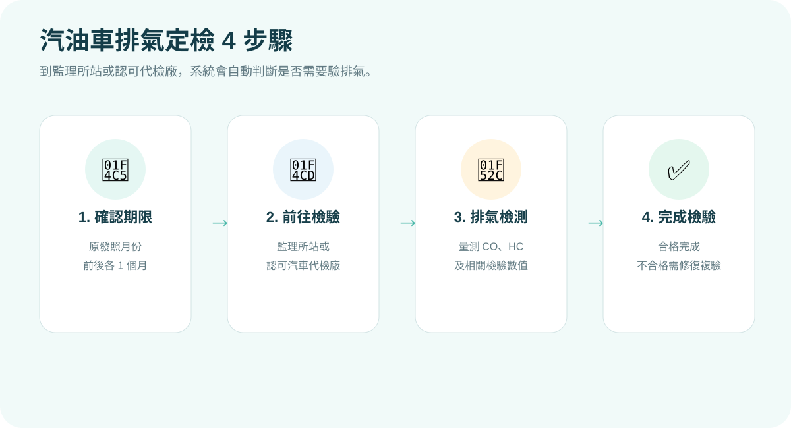
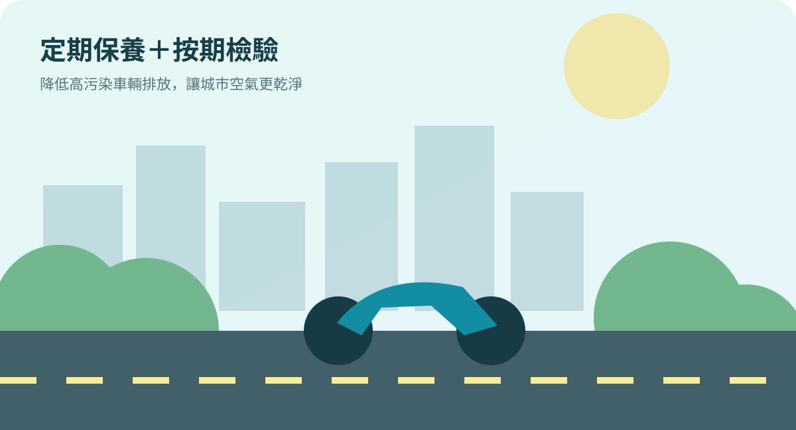

出廠滿 8 年以上
車齡為偶數年時，每 2 年驗 1 次例如車齡滿 8、10、12、14 年……時，於該年度依原發照月份辦理排氣定檢。
汽油車污染管制 × 定期排氣檢驗
出廠滿 8 年以上的汽油車，原則上每 2 年於「車齡為偶數年」時接受排氣定檢； 檢驗期限為行照原發照月份前後各 1 個月。
先看「出廠年數」，再看今年車齡是不是 8、10、12、14…等偶數年。
WHO NEEDS INSPECTION
目前正式規定有「一般車齡定檢」和「曾經不合格後的加強管理」兩種情形。
例如車齡滿 8、10、12、14 年……時，於該年度依原發照月份辦理排氣定檢。
連續 2 年定檢均合格後，才回到一般「每 2 年 1 次」的頻率。
DATE CHECKER
如果今年確定是你的排氣定檢年度，只要選擇「行照原發照月份」，就能快速看到可辦理的月份。
DON'T CONFUSE THEM
112 年 7 月起，汽油車排氣檢驗回歸環保法規管理，但實務上仍可在監理所站或認可代檢廠一起辦理。
依道路交通安全相關規定辦理，檢查煞車、燈光、底盤等安全項目；檢驗頻率依車種與車齡不同。
屬空氣污染防制管理。到檢時電腦系統會自動判定該車是否需要做排氣檢測，車主不必自行計算。
汽油車排氣定檢檢測費用為每輛 100 元，由空污基金補助；實務上車主無需額外負擔這項排氣檢驗費用。

WHAT IS TESTED
環境部汽車定檢系統可查到檢驗日期、結果，以及 HC、CO、CO₂ 等檢驗數值。定期檢驗有助於找出燃燒或污染控制系統異常的高污染車輛。
PROCESS
不用另外跑一個複雜流程，依平常驗車方式到監理所站或認可汽車代檢廠即可。

DATA
環境部公布的歷年檢測資料顯示，汽油車排氣定檢不合格率約 2%。
約 98% 其餘檢驗結果
約 2% 不合格
依環境部「車輛排氣定檢檢驗」公開之汽車排氣定檢不合格率約 2% 製作。FAILED OR OVERDUE
重點是不要放著不處理。定檢不合格應儘快修復，並在 1 個月內完成複驗。
依檢驗結果檢查引擎、燃燒與污染控制系統。
超過期限未完成，可能依空污法受罰。
之後依規定進入連續 2 年每年定檢管理。
E-NOTICE
完成 Email 驗證與車號綁定後，汽車進入定檢區間時可收到電子郵件提醒。每位使用者可管理最多 10 筆車號。


FAQ
不是。一般汽油車是出廠滿 8 年以上後，每 2 年於車齡為偶數年時驗 1 次；若曾經檢驗不合格後改善合格，則次年起連續 2 年每年驗 1 次。
可至主管機關委託認可的汽油車排氣檢驗站，或中央主管機關委託的公路監理機關辦理；可利用環境部系統查詢站點。
通常不用。實務上仍可在監理所站或民間認可代檢廠辦理，電腦系統會自動判定該次是否需做排氣檢測。
環境部公開資料列汽油車排氣定檢每輛檢測費 100 元，由空污基金補助；監理機關亦說明車主無需為這項排氣檢驗額外繳費。
不建議拖延。依法應於檢驗日起 1 個月內修復並申請複驗；逾期或複驗仍不合格可能受罰。
OFFICIAL LINKS
本頁為網站範本，正式發布前請更新聯絡方式及公告內容。
本頁依環境部汽車排氣定期檢驗資訊管理系統、環境部主管法規及政府公開資訊整理為便民閱讀版本。檢驗規定、站點、裁罰及個案認定可能調整，實際仍以主管機關最新公告為準。